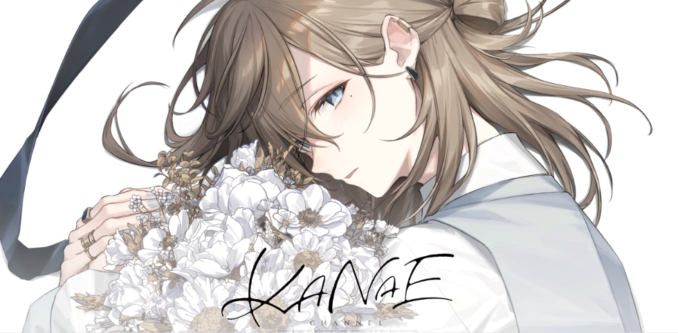
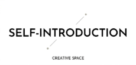
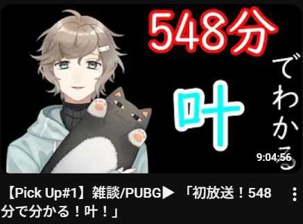
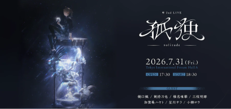

私の推しは「にじさんじ」というVtuber事務所に所属している叶さんです。
活動開始時期はなんと2018年!今活動9年目のVtuberの中でも初期の方から活動されている方です。
そんな叶さんの特徴はなんといっても長時間配信!!!叶さんはデビュー配信からなんと9時間も配信されました。
叶さんついての簡単な概要を紹介させていただきましたが、ここで私の大好きな叶さんの「魅力」をご紹介したいと思います。
まず私の思う一番の魅力は性格です。凄くストイックに努力される方で、
ライブや大会の度に練習をめちゃくちゃ頑張っているその姿勢や日々の努力を怠らないその姿にあこがれと敬意を抱いています。

なんと今年2026年7月31日に叶さんの2ndLIVE 孤独が行われることが決まりました!!!
ネットチケットなどもありますのでご興味がありましたら是非見てみてください。
最後まで見ていただいてありがとうございました。
↓関連リンク